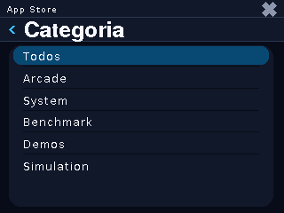
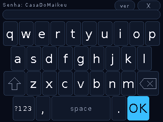
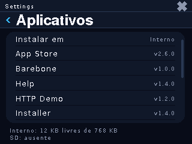

O caminho #
Flash do firmware
No repo CelerOS, build e flash para a sua placa (CYD no exemplo —
as outras trocam o <board>):
idf.py -B build-cyd -DSDKCONFIG=build-cyd/sdkconfig \ -DSDKCONFIG_DEFAULTS="sdkconfig.defaults;boards/cyd/sdkconfig.defaults" \ -DCELEROS_BOARD=cyd set-target esp32 idf.py -B build-cyd build flash -p /dev/ttyUSB1 # partição de dados (apps de fábrica + ícones): tools/flash_data.sh cyd /dev/ttyUSB1
Após o boot, a tela mostra o launcher com "Sem Wifi" — normal, ainda não provisionamos nada.
Conheça o celerctl
Instale a dependência e liste as placas conectadas:
pip install pyserial python3 tools/celerctl.py devices
Saída real com 4 placas ligadas (USB e bridge WiFi):
/dev/ttyUSB1 CELEROS 1.8.0|smartdisplay_4in|api 27|proto 2|chunk 8192|win 4 /dev/ttyACM0 CELEROS 1.8.0|spotpear-dog|api 27|proto 2|chunk 8192|win 4 /dev/ttyACM2 CELEROS 1.8.0|waveshare-amoled206|api 27|proto 2|chunk 8192|win 2 192.168.0.134:5555 wifi CELEROS 1.8.0|smartdisplay_4in|api 27|tcp 5555
Provisione WiFi (uma vez)
Salva as credenciais na NVS do aparelho e conecta em segundo plano; o relógio acerta sozinho por NTP assim que a rede sobe:
python3 tools/celerctl.py -p /dev/ttyUSB1 provision --wifi MinhaRede senha123 python3 tools/celerctl.py -p /dev/ttyUSB1 shell info # confere o IP
No launcher o badge "Sem Wifi" vira o ícone de sinal e o relógio passa a mostrar a hora certa.
Instale um app pela App Store do aparelho
No launcher, toque em App Store → categoria Todos → toque INSTALAR no card do app. O download é streaming com MD5 e a instalação é um rename atômico — se algo cair no meio, o app anterior continua lá.


Verifique atualização OTA
Abra Settings → Atualizacao → CHECK. O aparelho lê o
update.json do canal da placa no hub e, se houver versão maior,
mostra o changelog e o botão INSTALL. A gravação acontece no slot inativo —
se algo falhar, o sistema atual segue no ar.

(Opcional) Pareie o bridge WiFi
Com o pair uma vez, o celerctl fala com a placa pela rede —
sem cabo:
python3 tools/celerctl.py -p /dev/ttyUSB1 pair python3 tools/celerctl.py -p 192.168.0.220:5555 shell info
Sem PC por perto? Dá para configurar o WiFi direto no aparelho em Settings → WiFi (teclado na tela). O provision por USB é só o caminho mais confortável — e o que fixa relógio/token/graça de uma vez.
Onde os apps instalam #
- Padrão:
/local/apps/<pkg>no flash interno (768 KB na CYD — dá para ~20 apps pequenos). - Com cartão SD: crie o arquivo-flag
/local/config_install_sd.txt(ou usecelerctl apps install --sd) e a loja passa a instalar em/sd/apps— no CYD o slot microSD compartilha o barramento do display e monta como segundo dispositivo SPI. - Offline: o app Installer instala pacotes de um SD, sem rede.
Ajuda no aparelho #
O app Ajuda lê os artigos deste hub (/help) — os mesmos
temas desta wiki, em texto puro sem acentos por causa da fonte do dispositivo.
Nas Configurações a seção Sobre mostra versão, API level e o canal OTA da
placa.